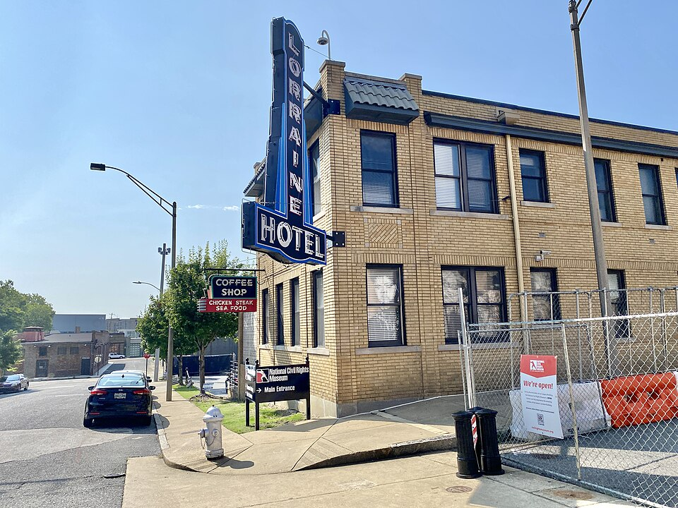

A42-POL-033 // HISTORICAL CLAIM REVIEW
Martin Luther King Jr.'s Assassination and Conspiracy Claims
Assessment: Ray's responsibility for the shooting is strongly established by his plea and physical evidence, though he later recanted.

.jpg){kind=link}
The precise allegation
James Earl Ray pleaded guilty to murdering Martin Luther King Jr. in 1968, then recanted. The question is whether Ray acted alone or whether a wider conspiracy existed. Government inquiries rejected sufficient evidence for a broad conspiracy, while a 1999 civil jury found a conspiracy in a wrongful-death suit; that verdict is significant but not a criminal finding against named defendants.
Chronology and political context
King was shot at the Lorraine Motel in Memphis on April 4, 1968, amid a sanitation workers' strike and federal surveillance of him. Ray was arrested in London, extradited, and entered a guilty plea in 1969, later seeking to withdraw it. The House Select Committee on Assassinations reopened the case in the 1970s; the Justice Department reviewed later allegations in 2000.
Primary historical record
The criminal plea, ballistics and physical evidence, FBI files, HSCA report, and Justice Department review form the primary record. The HSCA concluded Ray probably acted as part of a conspiracy but could not identify other participants; DOJ found no credible evidence for a government-directed plot. The civil King family suit relied on a different evidentiary standard and no government defense.
Corroboration and contrary evidence
Investigative reporter and attorney William Pepper's claims influenced the 1999 trial, whose jury found a conspiracy after hearing testimony that was not tested through ordinary criminal prosecution. The HSCA's probable-conspiracy conclusion partly relied on circumstantial evidence and questioned Ray's full account. These findings deserve attention but do not prove the specific government or mob theories often attached to them.
What remains uncertain
Ray's changing statements, gaps in the investigation, and intelligence agencies' hostility toward King leave questions about surveillance, missed warnings, and possible assistance unresolved. The 1999 civil verdict lacks the safeguards and adversarial participation of a criminal trial. No reliable evidence has established that a named official ordered the killing.
Calibrated verdict
Ray's responsibility for the shooting is strongly established by his plea and physical evidence, though he later recanted. Some committee members saw indications of a wider conspiracy, but a specific sponsor or operational network has not been proven. State misconduct against King is independently documented; that history is not itself proof of murder complicity.
What evidence could change this assessment
Authenticated records tying a second actor to the rifle, money, escape, or advance planning would alter the case. Independent corroboration of contested witnesses in the civil trial, or a transparent forensic reanalysis with preserved chain of custody, could strengthen or weaken the conspiracy finding. Proof of prior surveillance should remain analytically separate from proof of participation.
Sources and source limits
- National Archives — House Select Committee on Assassinations reportCongressional investigation concluded probable conspiracy but named no co-conspirator; its evidence and methods have been debated.
- U.S. Department of Justice — The FBI and the Assassination of Dr. Martin Luther King, Jr.Reviews government conduct and later allegations; official retrospective subject to the same limitations as any agency inquiry.
- Stanford King Institute — The Assassination of Martin Luther King, Jr.Academic historical overview with context and sources; a summary rather than a fresh forensic investigation.